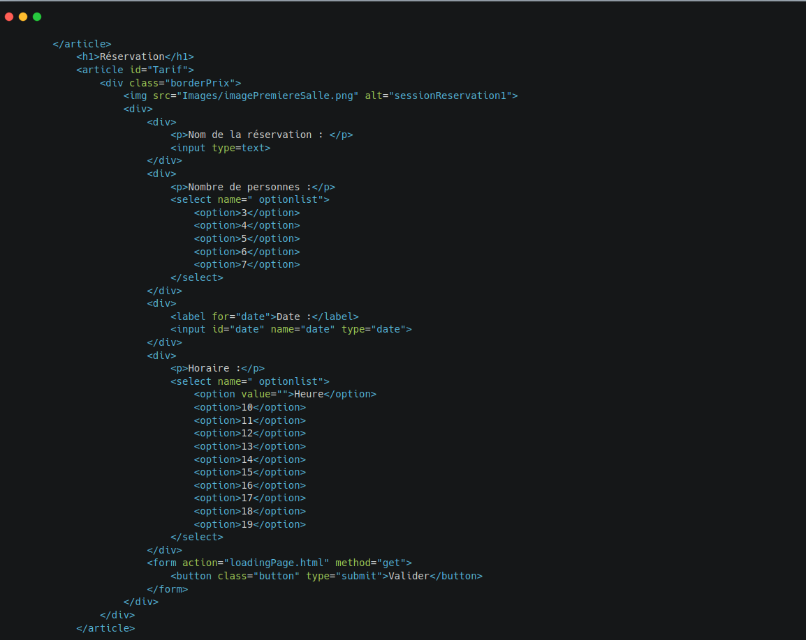
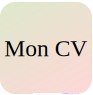

Projet de conception d'un site web de promotion d'escape game sur l'Égypte
Amenti : La voie d'osiris
Équipe : 4
Durée : 4 semaines
Description : Site web de promotion d’un escape game.
Type de projet : Universitaire
Contraintes : Temps, contact et compréhension du client.
Contribution personnelle :
- Réalisation de la partie de réservation
- Structuration de l'architecture globale du site
- Intégration de la carte interactive à la fin du site.
- Participation à la communication avec le client.
Ce que j’ai appris :
- Structurer les balises HTML (utiliser des balises appropriées).
- Construire une page stylisée.
- Intégrer une carte interactive.
Conception du système de réservation
Problème à résoudre : Le client avait besoin d'un moyen simple pour que les visiteurs puissent réserver leur session d'escape game en ligne.
Ma solution :
J'ai créé de zéro un formulaire de réservation intuitif avec :
- Un champ pour le nom de la réservation
- Un sélecteur pour le nombre de participants (3 à 7 personnes)
- Un calendrier pour choisir la date
- Un menu déroulant pour sélectionner l'horaire
- Un bouton de validation clair et visible
Extrait de mon code pour le formulaire :

Mon approche :
- J'ai veillé à ce que le formulaire soit visuellement cohérent avec le thème égyptien
- J'ai positionné le formulaire à côté d'une image immersive pour créer une expérience engageante
- J'ai utilisé des couleurs chaudes et des bordures arrondies pour un design moderne mais thématique
Résultat : Un système de réservation fonctionnel qui s'intègre parfaitement à l'univers de l'escape game tout en étant simple à utiliser.
Structuration de l'architecture globale du site
Mon défi : Organiser toutes les informations de manière logique et attrayante.
Ce que j'ai fait :
J'ai conçu la structure complète du site en utilisant des balises sémantiques :
<header>...</header>
<main>
<section id="information">...</section>
<section id="salles">...</section>
<section id="reservation">...</section>
</main>
<footer>...</footer>J'ai créé une navigation fluide entre les sections (Accueil, Tarifs, Salles, Flyer, Contact)
J'ai organisé le contenu pour guider naturellement l'utilisateur vers l'action principale : la réservation
Mon choix de design :
- J'ai opté pour un fond avec des hiéroglyphes pour une immersion totale
- J'ai utilisé des cartouches égyptiennes pour les titres
- J'ai maintenu une cohérence visuelle sur toutes les pages
Impact : Les visiteurs peuvent facilement trouver les informations et sont guidés vers la réservation
Intégration d'une carte Google Maps interactive
L'objectif : Faciliter l'accès à l'escape game pour les visiteurs.
Ma réalisation :
Voici mon code pour appeler cette carte :
<footer id="contact">
<iframe src="https://maps.google.com/maps?q=+99+avenue+occitanie+Montpellier&t=&z=18&ie=UTF8&iwloc=&output=embed" width="100%" height="358px"></iframe>
<address>99 avenue Occitanie, 34000 Montpellier</address>
</footer>
Mes décisions techniques :
- J'ai choisi une iframe responsive qui s'adapte à tous les écrans
- J'ai positionné la carte dans le footer pour qu'elle soit visible sans être intrusive
- J'ai ajouté les coordonnées textuelles à côté pour les utilisateurs qui préfèrent cette option
Résultat : Les visiteurs peuvent facilement localiser l'escape game et obtenir un itinéraire.
Participation à la communication avec le client
Mon rôle : Servir de pont entre notre équipe technique et le client.
Ce que j'ai fait :
- J'ai clarifié les besoins du client en posant les bonnes questions
- J'ai reformulé les demandes en termes techniques pour notre équipe
- J'ai présenté nos solutions de manière compréhensible pour le client
- J'ai géré les attentes en expliquant ce qui était réalisable dans notre délai
Ce que j'en retire :
- L'importance de l'écoute active pour comprendre les vrais besoins
- La nécessité de traduire le jargon technique en langage clair
- L'art du compromis entre les souhaits du client et les contraintes techniques
Résultat : Un client satisfait et une équipe qui savait exactement ce qu'elle devait faire.
Ce que je retiens de cette expérience
Pyramidum a été bien plus qu'un simple projet universitaire pour moi. C'était ma première véritable expérience de développement web complet, de la conception à la livraison.
Ce qui m'a le plus marqué, c'est de voir comment mon code a un impact réel sur les utilisateurs. Quand j'ai vu des visiteurs utiliser le formulaire de réservation que j'avais créé, ou naviguer facilement grâce au menu déroulant que j'avais développé, j'ai compris la puissance du développement web.
J'ai aussi réalisé que les détails font toute la différence : le choix des couleurs, la position d'un bouton, ou même l'animation d'un menu déroulant peuvent transformer une simple page web en une expérience mémorable.
Mais surtout, ce projet m'a confirmé que j'ai choisi la bonne voie. Le mélange de créativité, de logique et de résolution de problèmes que demande le développement web correspond parfaitement à ce que j'aime faire.
